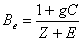
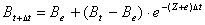
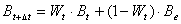

Ecospace is based on the same set of differential equations as used in Ecosim, and in essence performs a complete set of Ecosim calculations for each cell for each time step. This represents a formidable amount of computations, but fortunately it has been possible to take a number of shortcuts to speed the processing up to an acceptable rate. Briefly explained the background for this takes its starting point in Equation 50 which expresses the rate of change for each biomass pool over time. If the rate constants were constant over time (they are not, but if!) the biomass would change as a linear dynamical system, and would move exponentially towards an equilibrium given by (omitting indices for cell and biomass pools)

Eq. 71while following the time trajectory

Eq. 72Denoting the exponential weight term above Wt this can be re-expressed as,

Eq. 73Hence, if input and output rates were constant, the time solutions would behave as weighted averages of past values and equilibrium values with weights depending on the mortality and migration rates. Using expressions of the type in Equation 73 the Ecospace computations can be greatly increased by using a variable time splitting where moving equilibria are calculated for groups with high turnover rates, (e.g., phytoplankton), while the integrations for groups with slower turnover rates, (e.g., fish and marine mammals) are based on a Runge-Kutta method. Comparisons indicate that this does not change the resulting time patterns for solutions in any noticeable way – hence, the ‘wrong’ assumption of time rate constancy introduced above is useful for speeding up the computations without noticeable detraction of the final results. The resulting computations are carried out orders of magnitude faster than it the time splitting was not included.